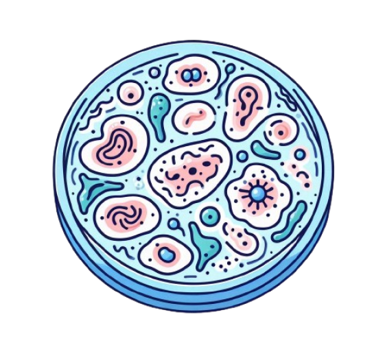
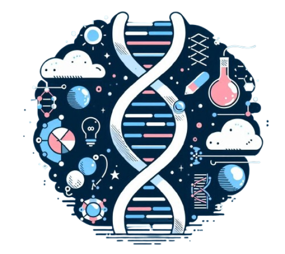

ROSE BIOLOGY
EXPLORE A CÉLULA A UNIDADE FUNDAMENTAL DA VIDA. APRENDA SOBRE SUAS PARTES, COMO A MEMBRANA, NÚCLEO E ORGANELAS, E DESCUBRA COMO ELAS FUNCIONAM EM HARMONIA PARA SUSTENTAR OS PROCESSOS VITAIS.
CÉLULAS:
A CÉLULA É A MENOR UNIDADE DE VIDA, ELA SOZINHA PODE FORMAR UM SER VIVO, OS SERES UNICELULARES, TAIS COMO BACTÉRIAS OU PROTOZOÁRIOS. QUANDO ESTÃO EM GRUPO FORMAM ORGANISMOS PLURICELULARES, COMO ANIMAIS OU PLANTAS. CADA CÉLULA ATUA COMO UMA PEQUENA FÁBRICA, REALIZANDO PROCESSOS VITAIS COMO A PRODUÇÃO DE ENERGIA, A SÍNTESE DE PROTEÍNAS E A COMUNICAÇÃO ENTRE DIFERENTES PARTES DO CORPO. TEMOS DOIS TIPOS DE CÉLULAS: AS EUCARIONTES E PROCARIONTES;
AS CÉLULAS EUCARIONTES SÃO AQUELAS QUE APRESENTAM UMA MEMBRANA ENVOLVENDO O SEU DNA, OU SEJA, NÚCLEO DEFINIDO. A CÉLULA EUCARIOTA É CONSTITUÍDA BASICAMENTE DE MEMBRANA PLASMÁTICA, CITOPLASMA E NÚCLEO. O DNA PRESENTE NESTA CÉLULA FICA DENTRO DO NÚCLEO, SEPARADO DAS ORGANELAS PRESENTES NO CITOPLASMA. AS CÉLULAS EUCARIONTES ESTÃO PRESENTES NA MAIORIA DOS ORGANISMOS VIVOS, TODOS OS FUNGOS, PROTISTAS, ANIMAIS E PLANTAS APRESENTAM ESSE TIPO DE ORGANIZAÇÃO CELULAR.
JÁ A CÉLULA PROCARIONTE NÃO POSSUI MEMBRANA NUCLEAR NEM ORGANELAS MEMBRANOSAS NO SEU INTERIOR, E O DNA FICA DISPERSO PELO CITOPLASMA.
NA CÉLULA VEGETAL, ALÉM DA MEMBRANA CELULAR EXISTE, MAIS EXTERNAMENTE, A PAREDE CELULAR, FORMADA DE CELULOSE. O CITOPLASMA É A PARTE DA CÉLULA QUE FICA ENTRE A MEMBRANA CELULAR E O NÚCLEO, SENDO CONSTITUÍDO POR UM MATERIAL GELATINOSO CHAMADO HIALOPLASMA. É FORMADO POR ÁGUA, SAIS MINERAIS, PROTEÍNAS E AÇÚCARES. NO HIALOPLASMA, ENCONTRAM-SE VÁRIAS ORGANELAS, ESTRUTURAS RESPONSÁVEIS POR DIVERSAS ATIVIDADES CELULARES, TAIS COMO: NUTRIÇÃO, RESPIRAÇÃO, ARMAZENAMENTO DE SUBSTÂNCIAS, ETC. EM CONJUNTO, ELAS SÃO RESPONSÁVEIS PELA MANUTENÇÃO DA VIDA
GOSTARIA DE APROFUNDAR SEU CONTEÚDO E APRENDER SOBRE AS ORGANELAS E SEUS TIPOS E FUNÇÕES?
VAMOS LÁ!